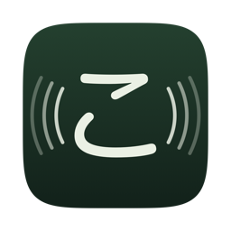
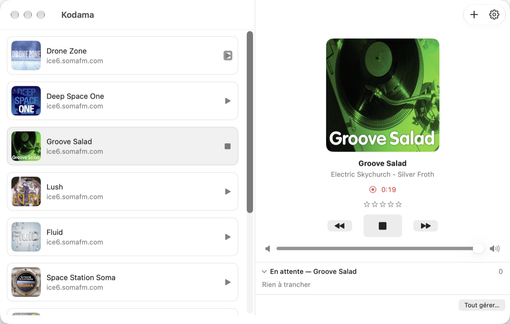
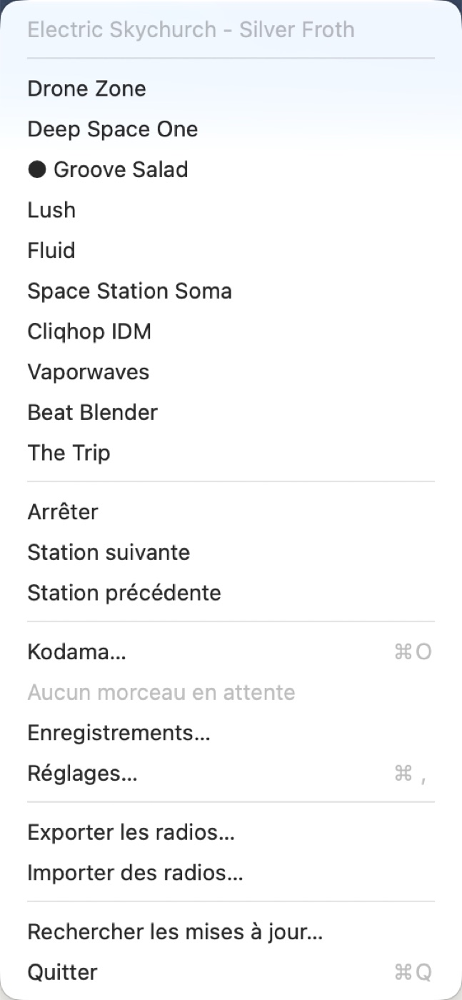
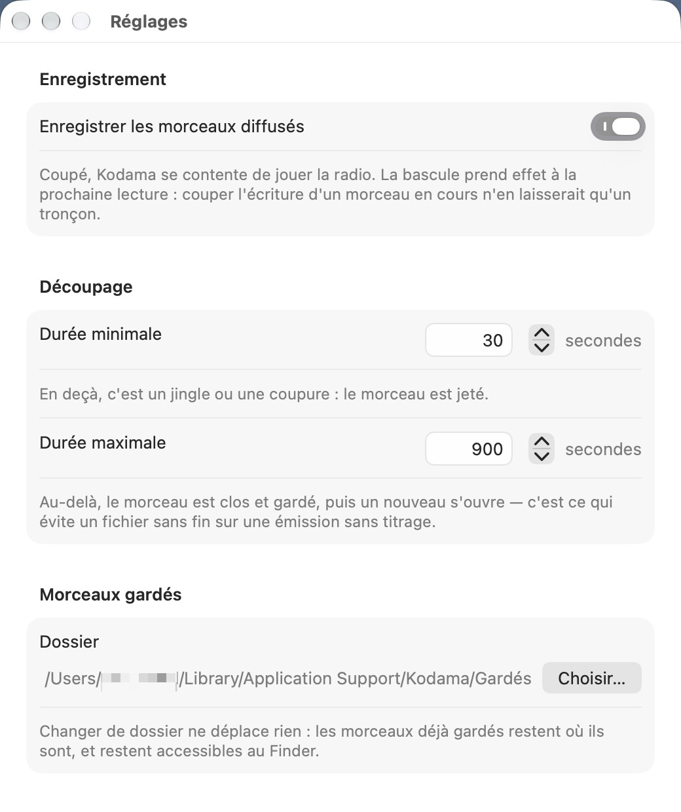
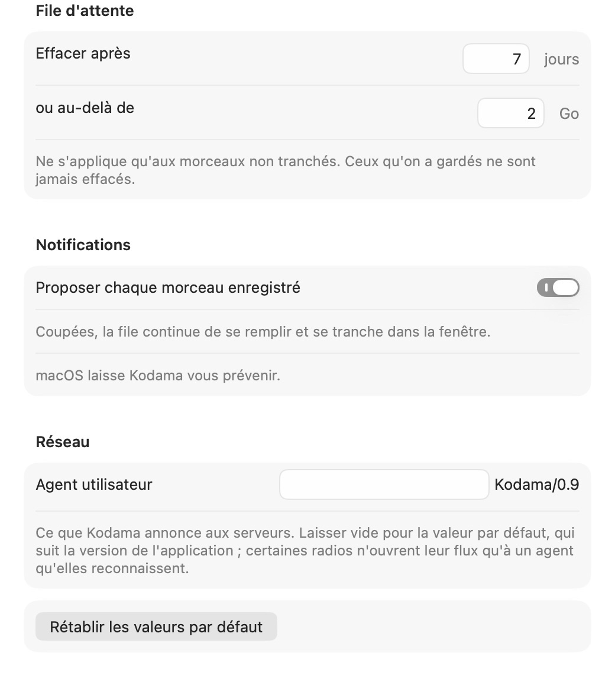

こだま — « écho »
Une application de streaming de Web Radio pour la barre des menus de macOS. Elle lit vos stations, enregistre les morceaux diffusés, et vous laisse choisir ceux à sauvegarder.
Télécharger Kodama 0.9
macOS 14 ou plus récent · Apple silicon et Intel · 4,7 Mo
Signée et notarisée par Apple
Ce qui joue, la liste des stations, un clic pour écouter. Les touches média du clavier changent de station.
Le titre arrive dans le flux à l'endroit même où le morceau commence. La coupe tombe sur une frontière de trame — sans décalage à corriger.
Chaque morceau enregistré vous est proposé par une notification. Garder, ou jeter. Rien ne s'accumule sans votre accord.

Le flux est lu une seule fois, et les octets reçus partent tels quels sur le disque : aucun réencodage, donc la qualité exacte de la station. Les fichiers portent une pochette — celle que la station annonce, ou l'image que vous avez donnée à la radio.
Les morceaux se notent de une à cinq étoiles, pendant la lecture ou après coup. La note part dans le fichier lui-même.

Kodama arrive avec dix radios choisies pour l'écoute de fond — ambient, chillout, electro, downtempo — toutes chez SomaFM, indépendante et sans publicité.
Elles ont un point commun qui n'a rien d'esthétique : elles diffusent toutes leurs titres. Une radio qui n'annonce rien s'écoute très bien, mais ne s'enregistre pas — et cela ne se voit qu'à l'usage. Vous pouvez évidemment ajouter les vôtres.


Les seuils de découpage, le dossier où vont les morceaux gardés, la durée de conservation de la file, les notifications. Kodama peut aussi ne faire que jouer la radio, sans rien enregistrer.
Le dossier est la base : aucun index à côté, les métadonnées vivent dans les étiquettes des fichiers, et tout se manipule au Finder. Rien n'est envoyé nulle part, aucun compte n'est demandé.
Ce que Kodama ne fait pas. Les radios qui n'annoncent pas leurs titres s'écoutent mais ne s'enregistrent pas — Radio France par exemple. Les flux HLS ne sont pas pris en charge : MP3 et AAC seulement. Pas de Chromecast, AirPlay le remplace.
Les signalements se déposent sur GitHub. Deux formulaires guident : l'un pour ce qui ne fonctionne pas, l'autre pour ce qui manque. Quelques questions y sont posées — version, station concernée — parce qu'elles évitent presque toujours un aller-retour.
Signaler un problème Voir les signalements
Un compte GitHub est nécessaire pour écrire, mais pas pour lire.